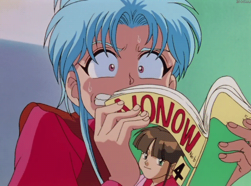

Emanuely Vanin
Desenvolvedor Frontend Júnior


Sobre
Oi, meu nome é Emanuely Vanin, seja bem-vindo(a)!
Sou uma pessoa apaixonada pela programação desde que eu tinha 15 anos Sempre tive o sonho de trabalhar com programação e atualmente comecei a colocar esse sonho em prática estudando HTML,CSS e JavaScript. Gosto muito de café (até demais) e meus principais Hobbis são jogar LOL, assistir séries.